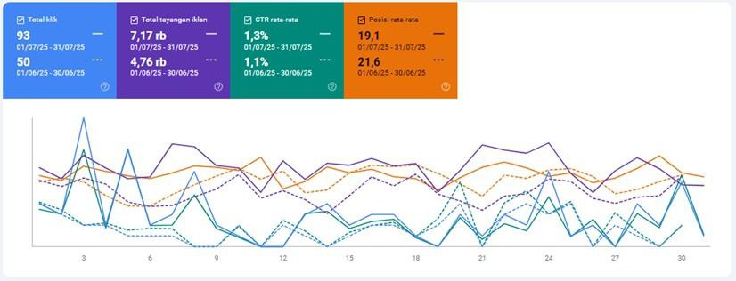
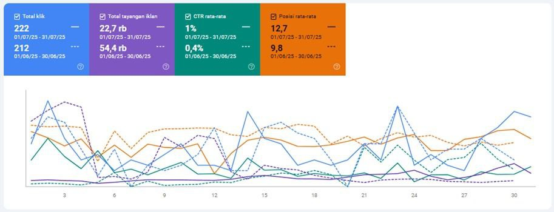
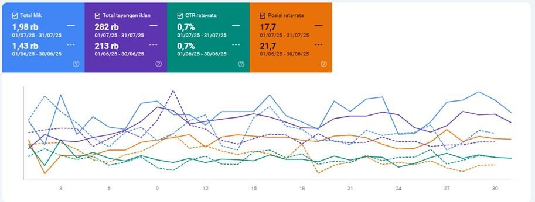

Laporan SEO Juni–Juli 2025

Sumber: Google Search Console
Ringkasan Performa
Dashboard menunjukkan peningkatan signifikan di semua metrik kunci dari Juni ke Juli 2025, dengan pertumbuhan yang sangat positif di seluruh area.
Tabel Perbandingan Metrik
| Metrik | Juni 2025 | Juli 2025 | Perubahan Absolut | Perubahan % | Status |
|---|
| Total Klik | 50 | 93 | +43 klik | +86.0% | ↗ Naik |
| Total Tayangan | 4,760 | 7,170 | +2,410 | +50.6% | ↗ Naik |
| CTR Rata-rata | 1.1% | 1.3% | +0.2 pp | +18.2% | ↗ Naik |
| Posisi Rata-rata | 21.6 | 19.1 | -2.5 posisi | 11.6% membaik | ↗ Membaik |
Analisis Mendalam
- Analisis Efisiensi – CTR Juli 1.30 % vs Juni 1.05 % (↑23.5 %). Peningkatan menunjukkan kualitas website & relevansi konten makin baik.
- Volume Pertumbuhan – Klik +86 %, Tayangan +51 %. Rasio klik yang lebih tinggi menandakan efektivitas meningkat.
- Positioning & Visibilitas – Posisi rata-rata naik 2.5 ke 19.1 (↑11.6 %), memperbesar visibilitas & traffic.
- Korelasi Metrik – Tayangan ↑50.6 % ⟹ Klik ↑86 %; CTR naik 18.2 % menegaskan optimasi konten berhasil.

Sumber: Google Search Console
Ringkasan Performa
Dashboard baru menunjukkan perubahan dinamis pada metrik kinerja antara Juni ke Juli 2025
Tabel Perbandingan Metrik
| Metrik | Juni 2025 | Juli 2025 | Perubahan Absolut | Perubahan % | Tren |
|---|
| Total Klik | 212 | 222 | +10 | +4.7% | Naik |
| Total Tayangan | 54,400 | 22,700 | -31,700 | -58.3% | Turun |
| CTR Rata-rata | 0.4% | 1.0% | +0.6 pp | +150.0% | Naik |
| Posisi Rata-rata | 9.8 | 12.7 | +2.9 posisi | 29.6% memburuk | Membaik¹ |
Interpretasi & Analisis
- Total Klik naik tipis 4.7 %, menjaga stabilitas meski tayangan turun drastis.
- Efisiensi Traffic – Tayangan turun, tetapi CTR melonjak, audiens kian relevan.
- Stabilitas Klik – Volume klik relatif stabil, kampanye tetap menarik walau reach mengecil.

Sumber: Google Search Console
Ringkasan Performa
Dashboard menunjukkan peningkatan signifikan di semua metrik kunci dari Juni ke Juli 2025, dengan pertumbuhan yang sangat positif.
Tabel Perbandingan Metrik
| Metrik | Juni 2025 | Juli 2025 | Perubahan Absolut | Perubahan % | Tren |
|---|
| Total Klik | 1,430 | 1,980 | +550 | +38.5% | Naik |
| Total Tayangan | 213,000 | 282,000 | +69,000 | +32.4% | Naik |
| CTR Rata-rata | 0.7% | 0.7% | 0 | 0.0% | Stabil |
| Posisi Rata-rata | 21.7 | 17.7 | -4.0 posisi | +18.4% Naik | Membaik |
Interpretasi & Insight
- Total Klik & Tayangan Naik Signifikan – Klik ↑38.5 %, Tayangan ↑32.4 %; volume & reach meningkat.
- CTR Stabil – Pada 0.7 % meski volume meningkat, efisiensi klik/tayangan terjaga.
- Posisi Rata-rata Membaik – Turun 4 posisi ke 17.7 (↑18.4 %), peringkat website lebih baik.
- Korelasi Metrik – Kenaikan tayangan & klik tanpa penurunan CTR menegaskan penargetan efektif; posisi lebih baik memperkuat visibilitas.